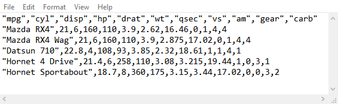
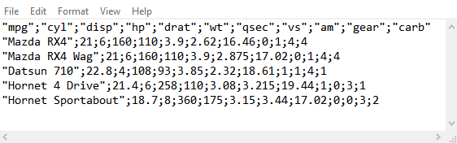
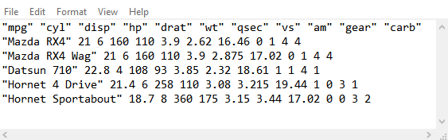
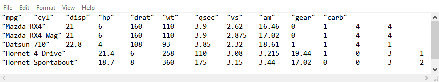
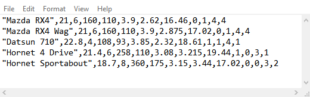
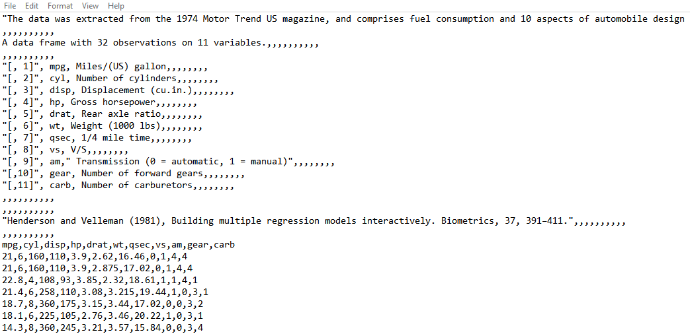
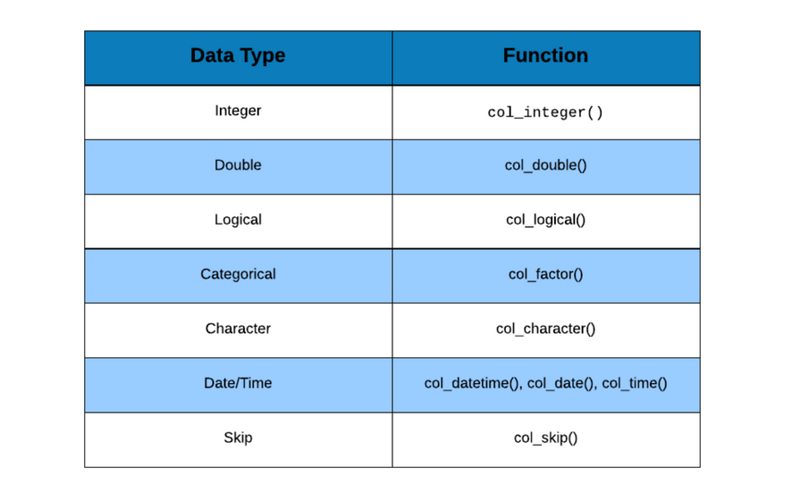
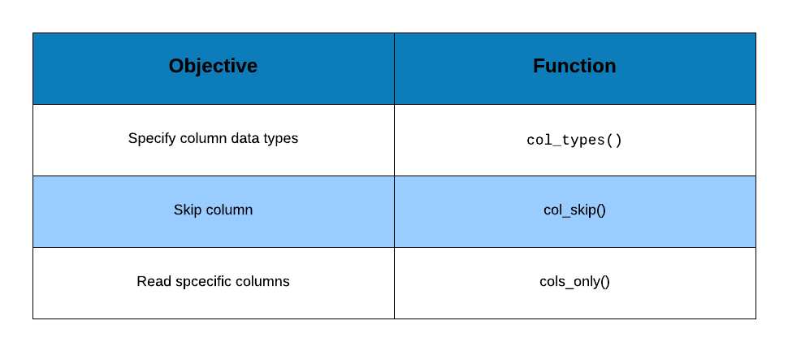
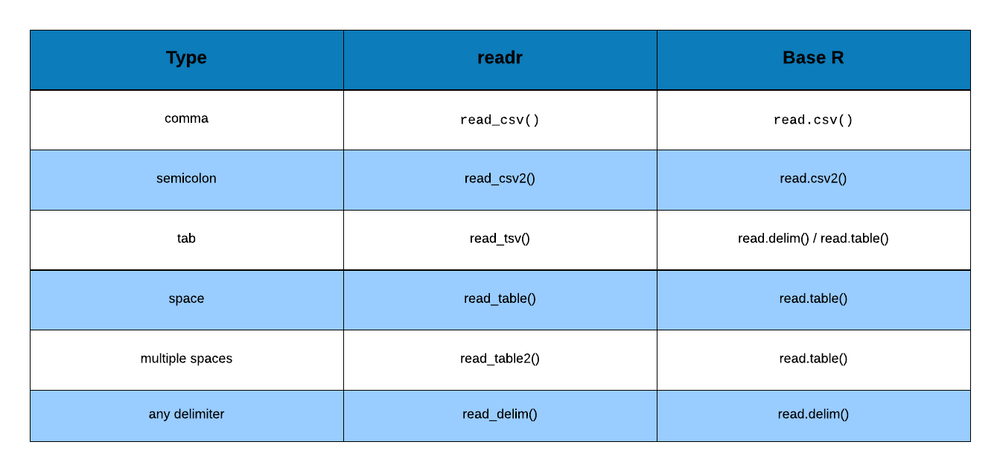

library(readr)1 Import Data - Basics
1.1 Introduction
In this chapter, we will learn to:
- read data from flat or delimited files
- handle column names/header
- skip text/info present before data
- specify column/variable types
- read specific columns/variables
We will use the following R packages:
1.2 Delimiters
Before we start reading data from files, let us take a quick look at the different types of delimiters we have to deal with while reading or importing data. In general, it is a good practice to take a quick look at as you will clearly know the delimiter used in the file.
1.2.1 Comma Separated Values

1.2.2 Semi Colon Separated Values

1.2.3 Space Separated Values

1.2.4 Tab Separated Values

1.3 Read Data
Let us begin by reading data from a csv file using read_csv().
read_csv('hsb2.csv')# A tibble: 200 × 11
id female race ses schtyp prog read write math science socst
<dbl> <dbl> <dbl> <dbl> <dbl> <dbl> <dbl> <dbl> <dbl> <dbl> <dbl>
1 70 0 4 1 1 1 57 52 41 47 57
2 121 1 4 2 1 3 68 59 53 63 61
3 86 0 4 3 1 1 44 33 54 58 31
4 141 0 4 3 1 3 63 44 47 53 56
5 172 0 4 2 1 2 47 52 57 53 61
6 113 0 4 2 1 2 44 52 51 63 61
7 50 0 3 2 1 1 50 59 42 53 61
8 11 0 1 2 1 2 34 46 45 39 36
9 84 0 4 2 1 1 63 57 54 58 51
10 48 0 3 2 1 2 57 55 52 50 51
# ℹ 190 more rowsGreat! If you see the above output, you have successfully read data into R. If you see an error message (which most of us see when we are trying to read data for the first time), follow the below instructions:
- check the separator in the file and ensure it is a
comma - check the file name
- check the file path i.e. location of the file
- ensure that the file name or path is enclosed in single or double quotes
When you read data using readr, it will display the data type detected for each column/variable in the data set. If you want to check the data types before reading the data, use spec_csv(). We will learn to specify the column types in the next section.
spec_csv('hsb2.csv')cols(
id = col_double(),
female = col_double(),
race = col_double(),
ses = col_double(),
schtyp = col_double(),
prog = col_double(),
read = col_double(),
write = col_double(),
math = col_double(),
science = col_double(),
socst = col_double()
)1.4 Column Names
In some cases, files do not include column names or headers. If we do not indicate the absence of column names, readr will treat the first row from the data as the column name. Like we said before, it is a good practice to take a quick look at the data to check for the presence/absence of column names.

We will first read the data set without indicating the presence or absence of column names.
read_csv('hsb3.csv')# A tibble: 199 × 11
`70` `0` `4` `1...4` `1...5` `1...6` `57...7` `52` `41` `47`
<dbl> <dbl> <dbl> <dbl> <dbl> <dbl> <dbl> <dbl> <dbl> <dbl>
1 121 1 4 2 1 3 68 59 53 63
2 86 0 4 3 1 1 44 33 54 58
3 141 0 4 3 1 3 63 44 47 53
4 172 0 4 2 1 2 47 52 57 53
5 113 0 4 2 1 2 44 52 51 63
6 50 0 3 2 1 1 50 59 42 53
7 11 0 1 2 1 2 34 46 45 39
8 84 0 4 2 1 1 63 57 54 58
9 48 0 3 2 1 2 57 55 52 50
10 75 0 4 2 1 3 60 46 51 53
# ℹ 189 more rows
# ℹ 1 more variable: `57...11` <dbl>As you can see, in the absence of column names, readr has converted the first row of the data into the column names. As a result, the data is not read properly and there are lots of missing values and warnings. If the column names are absent (i.e. the column names are provided in a separate file), use the col_names argument and set it to FALSE. Now readr will not convert the first row of data into column name and instead it will generate new column names.
read_csv('hsb3.csv', col_names = FALSE)# A tibble: 200 × 11
X1 X2 X3 X4 X5 X6 X7 X8 X9 X10 X11
<dbl> <dbl> <dbl> <dbl> <dbl> <dbl> <dbl> <dbl> <dbl> <dbl> <dbl>
1 70 0 4 1 1 1 57 52 41 47 57
2 121 1 4 2 1 3 68 59 53 63 61
3 86 0 4 3 1 1 44 33 54 58 31
4 141 0 4 3 1 3 63 44 47 53 56
5 172 0 4 2 1 2 47 52 57 53 61
6 113 0 4 2 1 2 44 52 51 63 61
7 50 0 3 2 1 1 50 59 42 53 61
8 11 0 1 2 1 2 34 46 45 39 36
9 84 0 4 2 1 1 63 57 54 58 51
10 48 0 3 2 1 2 57 55 52 50 51
# ℹ 190 more rowsWe may not always want to use the column names generated by readr and instead specify new column names. In such cases, we can use col_names to supply column names as shown in the below example. Let us reread hsb3 and specify column names.
cnames <- c("id", "gender", "race", "socio_economic_status", "school_type", "program", "read", "write", "math", "science", "socst")
read_csv('hsb3.csv', col_names = cnames)# A tibble: 200 × 11
id gender race socio_economic_status school_type program read write
<dbl> <dbl> <dbl> <dbl> <dbl> <dbl> <dbl> <dbl>
1 70 0 4 1 1 1 57 52
2 121 1 4 2 1 3 68 59
3 86 0 4 3 1 1 44 33
4 141 0 4 3 1 3 63 44
5 172 0 4 2 1 2 47 52
6 113 0 4 2 1 2 44 52
7 50 0 3 2 1 1 50 59
8 11 0 1 2 1 2 34 46
9 84 0 4 2 1 1 63 57
10 48 0 3 2 1 2 57 55
# ℹ 190 more rows
# ℹ 3 more variables: math <dbl>, science <dbl>, socst <dbl>1.5 Skip Lines
In certain files, you will find information related to the data such as:
- the data source
- column names
- column description
- copyright etc.
The data will appear after/below such text/information. While reading data from such files, we need to skip all the rows where the text is present. If we do not skip them, readr will consider them as part of the data.

Let us read the data without skipping any lines/rows and observe the result.
read_csv('hsb4.csv')# A tibble: 203 × 1
`# A dataset containing demographic information and standardized`
<chr>
1 # test scores of high school students.
2 # http://www.ats.ucla.edu/stat/spss/whatstat/whatstat.htm
3 id,female,race,ses,schtyp,prog,read,write,math,science,socst
4 70,0,4,1,1,1,57,52,41,47,57
5 121,1,4,2,1,3,68,59,53,63,61
6 86,0,4,3,1,1,44,33,54,58,31
7 141,0,4,3,1,3,63,44,47,53,56
8 172,0,4,2,1,2,47,52,57,53,61
9 113,0,4,2,1,2,44,52,51,63,61
10 50,0,3,2,1,1,50,59,42,53,61
# ℹ 193 more rowsUse skip argument to indicate the number of lines/rows to be skipped while reading data from a file. For example, if the file has contents other than data in the first few lines, we need to skip them before reading the data. In the below example, we will skip the first 3 lines as they contain information about the data set which we do not need.
read_csv('hsb4.csv', skip = 3)# A tibble: 200 × 11
id female race ses schtyp prog read write math science socst
<dbl> <dbl> <dbl> <dbl> <dbl> <dbl> <dbl> <dbl> <dbl> <dbl> <dbl>
1 70 0 4 1 1 1 57 52 41 47 57
2 121 1 4 2 1 3 68 59 53 63 61
3 86 0 4 3 1 1 44 33 54 58 31
4 141 0 4 3 1 3 63 44 47 53 56
5 172 0 4 2 1 2 47 52 57 53 61
6 113 0 4 2 1 2 44 52 51 63 61
7 50 0 3 2 1 1 50 59 42 53 61
8 11 0 1 2 1 2 34 46 45 39 36
9 84 0 4 2 1 1 63 57 54 58 51
10 48 0 3 2 1 2 57 55 52 50 51
# ℹ 190 more rows1.6 Maximum Lines
Suppose the data file contains several thousands of rows of data and we do not want to read all of it. What can we do in such cases? readr allows us to specify the maximum number of rows to be read using the n_max argument. Suppose we want to read only 100 rows of data from a file, we can set n_max equal to 100. In the next example, we will read the first 120 rows from the hsb2 file. If you observe the last row in the output, it says # ... with 110 more rows, indicating that only 120 rows of data has been read from the file.
read_csv('hsb2.csv', n_max = 120)# A tibble: 120 × 11
id female race ses schtyp prog read write math science socst
<dbl> <dbl> <dbl> <dbl> <dbl> <dbl> <dbl> <dbl> <dbl> <dbl> <dbl>
1 70 0 4 1 1 1 57 52 41 47 57
2 121 1 4 2 1 3 68 59 53 63 61
3 86 0 4 3 1 1 44 33 54 58 31
4 141 0 4 3 1 3 63 44 47 53 56
5 172 0 4 2 1 2 47 52 57 53 61
6 113 0 4 2 1 2 44 52 51 63 61
7 50 0 3 2 1 1 50 59 42 53 61
8 11 0 1 2 1 2 34 46 45 39 36
9 84 0 4 2 1 1 63 57 54 58 51
10 48 0 3 2 1 2 57 55 52 50 51
# ℹ 110 more rows1.7 Column Types
If you have observed carefully, when you read data using readr, it displays the column names and column types followed by the first 10 rows of data. readr determines the data type for each column based on the first 1000 rows of data. The data can be of the following types:
- integer
- double (decimal point)
- logical (TRUE/FALSE)
- character (text/string)
- factor (categorical/qualitative)
- date/time

Before you read data from a file, use spec_csv() to see the data types as determined by readr. If it determines the data types correctly, you can go ahead and read the data else we will have to specify the data types and we will have to do that for all the columns we want to read and not just for those columns whose data type was wrongly determined by readr.
To specify the data types, we will use the col_types argument and supply it a list of data types. The data types can be specified using:
col_integer()col_double()col_factor()col_logical()col_character()col_date()col_time()col_datetime()
While specifying the data types we also need to specify the categories of the categorical/qualitative variable. To do that, we use the levels argument within col_factor(). Let us read data from the hsb2.csv file to understand data type specification.
read_csv('hsb2.csv', col_types = list(
col_integer(), col_factor(levels = c("0", "1")),
col_factor(levels = c("1", "2", "3", "4")), col_factor(levels = c("1", "2", "3")),
col_factor(levels = c("1", "2")), col_factor(levels = c("1", "2", "3")),
col_integer(), col_integer(), col_integer(), col_integer(),
col_integer())
)# A tibble: 200 × 11
id female race ses schtyp prog read write math science socst
<int> <fct> <fct> <fct> <fct> <fct> <int> <int> <int> <int> <int>
1 70 0 4 1 1 1 57 52 41 47 57
2 121 1 4 2 1 3 68 59 53 63 61
3 86 0 4 3 1 1 44 33 54 58 31
4 141 0 4 3 1 3 63 44 47 53 56
5 172 0 4 2 1 2 47 52 57 53 61
6 113 0 4 2 1 2 44 52 51 63 61
7 50 0 3 2 1 1 50 59 42 53 61
8 11 0 1 2 1 2 34 46 45 39 36
9 84 0 4 2 1 1 63 57 54 58 51
10 48 0 3 2 1 2 57 55 52 50 51
# ℹ 190 more rowsIf we do not specify the data type for all columns, readr will return an error which leads to the following questions:
- What if I want to skip a few columns?
- What if I want to read certain columns only?
1.8 Select Columns

For the first scenario, we can use col_skip() i.e. instead of specifying the data type, we indicate to readr to skip that particular column while reading the data.
In case of the second scenario, we will use cols_only() to specify the columns to be read i.e. instead of using list() to supply the data types, we will use cols_only() and provide the following details:
- column name
- column type using
col_typesargument
read_csv('hsb2.csv', col_types = cols_only(id = col_integer(),
prog = col_factor(levels = c("1", "2", "3")), read = col_integer())
)# A tibble: 200 × 3
id prog read
<int> <fct> <int>
1 70 1 57
2 121 3 68
3 86 1 44
4 141 3 63
5 172 2 47
6 113 2 44
7 50 1 50
8 11 2 34
9 84 1 63
10 48 2 57
# ℹ 190 more rowsIf you have a data set with 10 columns and plan to skip only a couple of columns, use col_skip() instead if you plan to read only a couple of columns, use cols_only().
1.9 Beyond CSV: parquet and quiet reads
Two habits scale beyond this chapter. First, read_csv() announces its guessed column types on every read; once you trust the spec, silence it with show_col_types = FALSE. Second, remote files re-download on every knit — cache them locally with download.file() once and read from disk afterwards. And when a CSV grows past comfortable memory (the 35 MB analytics_raw.csv in later chapters is the first warning sign), switch the format, not the workflow: arrow::read_parquet() returns the same tibble the dplyr verbs expect. See @arrow-duckdb for the full quickstart.
1.10 Summary
